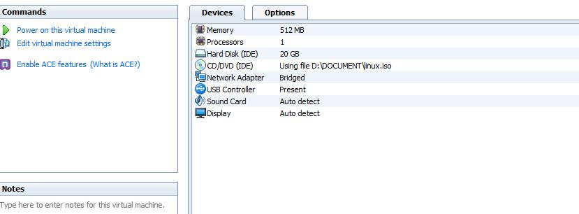
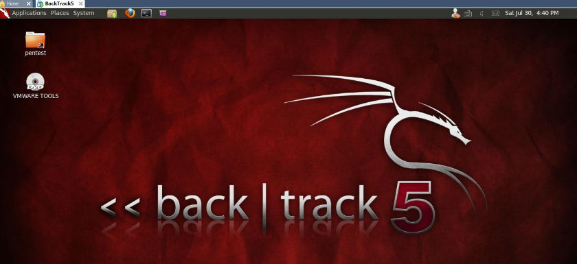
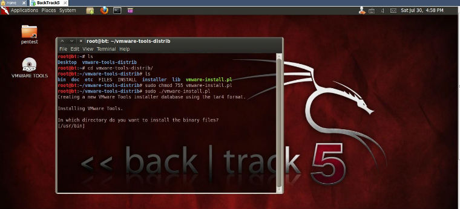
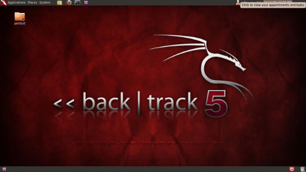

Backtrack5最新版chrome
在windows下用惯了chrome，受不了chrome的诱惑，还是忍不住想把bt5下的firefox给换了。chrome官网下载安装包放置于/root/software/路径下，然后安装。
root@bt:~# cd software/
root@bt:~/software# dpkg -i google-chrome-stable_current_i386.deb
Selecting previously deselected package google-chrome-stable.
(Reading database ... 220905 files and directories currently installed.)
Unpacking google-chrome-stable (from google-chrome-stable_current_i386.deb) ...
Setting up google-chrome-stable (13.0.782.220-r99552) ...
update-alternatives: using /usr/bin/google ...backtrack5下注册nessus非商用版
打开BT5下菜单Backtrack --> Vulnerability Assessment --> Network Assessment --> Vulnerability Scanner --> Nessus start 会提示插件缺失需要注册。
root@bt:~# Missing plugins. Attempting a plugin update...
Your installation is missing plugins. Please register and try again.
To register, please visit http://www.nessus.org/register/
到官网http://www.nessus.org/register注册，好工具只给注册家用版，填好邮箱注册即可，登陆邮箱会收到一封确认邮件。告诉你在不同系统(windows ...
BT5安装openoffice和星际译王stardict
BT5下安装openoffice
上次装了Adobe Reader在BT5下面能看PDF了，后来发现不能看word，ppt，excel也是一件很痛快的事情，虽然安装了vmware-tools之后在windows和BT5直接直接来回拖文件也挺方便，但是也不那么方便，所以今天还是老老实实地把openoffice在BT5下面给安装了。
首先到openoffice官网上下载安装包，因为我选的是deb安装，而不是rpm安装，所以我下载deb包，放在~/software目录下。
root@bt:~# cd ~/software
root@bt:~/software#
root@bt:~/software# tar zxvf OOo_3.3.0_Linux_x86_install-deb_zh-CN.tar.gz
root@bt:~/software# cd OOO330_m20_native_packed-1_zh-CN.9567/
root@bt:~/software/OOO330_m20_native_packed-1_zh-CN.9567# ls
DEBS licenses readmes update
进入DEBS目录，安装该目录下的所有deb包 ...
more ...Backtrack一些基本配置
查看网络配置信息
root@bt:/# ifconfig -a
手动激活未使用的网卡eth0
root@bt:/# ifconfig eth0 up
通过DHCP自动为eth0网卡分配ip地址
root@bt:/# dhclient eth0
也可手动为eth0网卡分配ip
root@bt:/# ifconfig eth0 192.168.1.105 netmask 255.255.255.0
添加网关
root@bt:/# route add default gw 192.168.1.1
查看dns配置信息:
root@bt:/# cat /etc/resolv.conf
编辑dns配置信息:
root ...
more ...Backtrack5安装Adobe reader看PDF
Linux下的办公软件Openoffice和Libreoffice都很不错，小巧的foxit reader也很好，不过我还是习惯用adobe reader，所以还是决定在bt5下安装adobe reader。
1、下载压缩包到/tmp
root@bt:~# cd /tmp
root@bt:/tmp# wget -c http://221.1.222.15:82/down/AdbeRdr9.4.2-1_i486linux_enu.tar.bz2
2、下载好之后解压:
root@bt:/tmp# tar jxvf AdbeRdr9.4.2-1_i486linux_enu.tar.bz2
tar: Record size = 8 blocks
AdobeReader/
AdobeReader ...BT5开机自动启动ibus
BT5下安装中文输入法：
apt-get install scim
BT5下安装ibus输入法管理器:
sudo apt-get install ibus
在System——>IBUS Preferences 选择Chinese——>Pin yin 输入法
怎么让BT5 开机自动启动IBUS呢，不然每次开机手动启动确实很麻烦的。这里是方法:
开机自动启动ibus输入法管理器:
System >> Preferences >> Startup Applications
Click the button: Add
Name: ibus daemon
Command: /usr/bin/ibus-daemon -d
好了，重启就可以了。
按Ctrl+空格调出输入法 ...
BT5如何安装VMware Tools
虚拟机安装VMwareTools有什么好处呢？我认为安装了VMwareTools之后最大的好处莫过于可以支持文件拖放拷贝和鼠标可以自由出入了，你可以很方便地将你Windows里面的东西拷到BT5里面，也可以很方便地将BT5里面的东西拷贝到Windows里面来。下面说说如何安装VMwareTools。
首先，你在启动虚拟机BT5之前你必须将CD/DVD(IDE) 设置里将包含vmware-tools的Iso启动文件选上。这里，我的是D:\DOCUMENT\linux.iso，大小116M。接着设置开机连接CD/DVD，启动BT5。

还是老规矩：输入用户名root；密码toor；启动图形界面:startx; 这时你会发现桌面上多了个光驱自动加载的VMWare tools文件:

先将文件夹里面的文件vmware-tools-distrib 拷贝到目录~/root下，然后照着下面这张图做就可以了。
记得一定要先改变先sudo chmod 755 vmware-install.pl不然可能会出现 no such file or directory。这会让你很崩溃的，明明有vmware-install.pl竟然提示不存在？！

接着按照提示做就可以了。遇到没有权限访问xxx ...
Backtrack初探
一般你去网上一搜Backtrack，出来一堆都是说用backtrack来破解无线网络密码的，似乎强大的backtrack俨然给我们的第一印像就是一个蹭网的工具而已，扫扫Wifi，破解破解WEP/WPA/WPA2加密什么的,实属不该~
Backtrack,中文不知道该翻译成啥，回溯？Backtrack是基于Slackware和SLAX的自启动运行的操作系统，它的初衷是给计算机安全领域用的。包含安全审计和渗透测试。Backtrack(简称BT)，现在最新的是今年5月份发布的Backtrack5,我现在用的就是BT5,Ubuntu gnome桌面的，你可以选KDE桌面，因为之前我用惯了ubuntu，所以选了gnome的。 在BT5之前还有BT2,BT3,BT4,BT4R2什么的，我接触的比较晚，只接触过BT4R2和BT5。就这两个来说，BT5界面上面确实比BT4R2眩多了。上靓图:

其实呢，Backtrack之所以吸引我的原因是因为它上面集成了无数无比强大的黑客工具（渗透工具），其中包含大家非常熟悉的强大的扫描工具nmap，Nessus等等，强大的Sniff工具Wireshark等，可以说是当前渗透测试人员和网络安全专家必备的测试平台。可不仅仅是蹭网的哦。